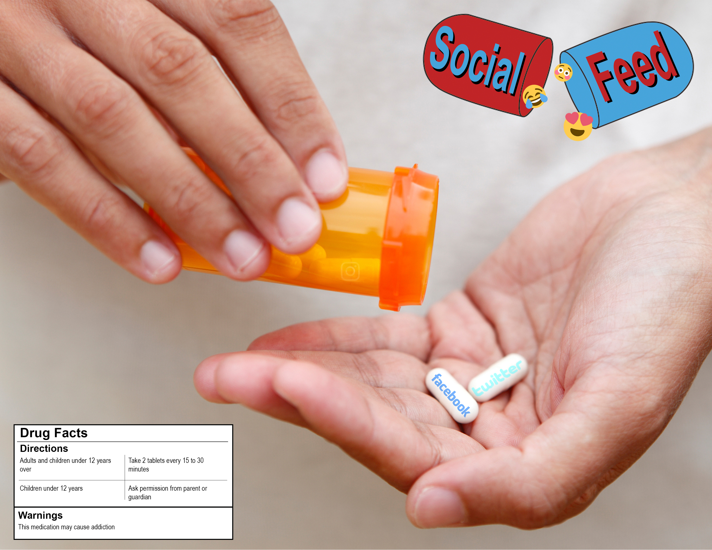

I wanted to create an art piece that portrays how people today consume social media. The idea is that social media is portrayed as a drug that people must take daily. From my point of view, even though I wish I say I do not use social media that much, I am still spending a lot of time on my phone, when there is nothing to do. After seeing how empty the image looked I had decided to add a bit of humor. I started to add directions for social media and even a cartoonish logo.
